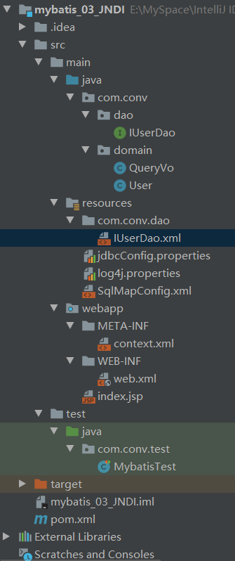

Mybatis 中的连接池以及事务控制
连接池就是用于存储连接的一个容器
容器其实就是一个集合对象，该集合必须是线程安全的，不能两个线程拿到同一个连接
该集合还必须实现队列的特性：先进先出
连接池配置的位置
主配置文件 SqlMapConfig.xml 中的 dataSource 标签，type 属性 就是表示采用何种连接池方式。
配置的方式（type 属性的取值）
POOLED
采用传统的 javax.sql.DataSource 规范中的连接池，mybatis 中有针对规范的实现
UNPOOLED
采用传统的获取连接的方式，虽然也实现 Javax.sql.DataSource 接口，但是并没有使用池的思想。
JNDI
采用服务器提供的 JNDI 技术实现，来获取 DataSource 对象，不同的服务器所能拿到 DataSource 是不一样的。
注意：
此配置如果不是 web 或者 maven 的 war 工程，是不能使用的
下文中使用的是 tomcat 服务器，采用连接池就是 dbcp 连接池
在这三种数据源中，我们一般采用的是 POOLED 数据源（很多时候我们所说的数据源就是为了更好的管理数据 库连接，也就是我们所说的连接池技术）。
JNDI 数据源的具体使用
JNDI：
Java Naming and Directory Interface，是SUN公司推出的一套规范，属于 JavaEE 的技术之一。目的是模仿 windows 系统中的注册表，在服务器中注册数据源
创建 Maven 的 web 工程并导入坐标：

1 2 3 4 5 6 7 8 9 10 11 12 13 14 15 16 17 18 19 20 21 22 23 24 25 26 27 28 29 30 31 32 33 34 35 36 37 38 39 <dependencies > <dependency > <groupId > org.mybatis</groupId > <artifactId > mybatis</artifactId > <version > 3.5.4</version > </dependency > <dependency > <groupId > mysql</groupId > <artifactId > mysql-connector-java</artifactId > <version > 8.0.19</version > </dependency > <dependency > <groupId > log4j</groupId > <artifactId > log4j</artifactId > <version > 1.2.17</version > </dependency > <dependency > <groupId > junit</groupId > <artifactId > junit</artifactId > <version > 4.13</version > <scope > test</scope > </dependency > <dependency > <groupId > javax.servlet</groupId > <artifactId > javax.servlet-api</artifactId > <version > 4.0.1</version > </dependency > <dependency > <groupId > javax.servlet.jsp</groupId > <artifactId > javax.servlet.jsp-api</artifactId > <version > 2.3.3</version > </dependency > </dependencies >
在 webapp 文件下创建 META-INF 目录，并在 META-INF 目录中建立一个名为 context.xml 的配置文件
1 2 3 4 5 6 7 8 9 10 11 12 13 14 15 16 17 18 19 20 21 22 23 24 25 26 27 28 29 <?xml version="1.0" encoding="UTF-8"?> <Context > <Resource name="jdbc/learn" type="javax.sql.DataSource" auth="Container" maxActive="20" maxWait="10000" maxIdle="5" username="root" password="4869" driverClassName="com.mysql.cj.jdbc.Driver" url="jdbc:mysql://localhost:3306/learn?serverTimezone=GMT%2B8" /> </Context >
修改 SqlMapConfig.xml 中的配置
1 2 3 4 5 6 7 8 9 10 11 12 13 14 15 16 17 18 19 20 21 22 23 24 25 26 27 28 29 30 31 32 33 34 35 36 <configuration > <properties resource ="jdbcConfig.properties" /> <typeAliases > <package name ="com.conv.domain" /> </typeAliases > <environments default ="mysql" > <environment id ="mysql" > <transactionManager type ="JDBC" /> <dataSource type ="JNDI" > <property name ="data_source" value ="java:comp/env/jdbc/learn" /> </dataSource > </environment > </environments > <mappers > <package name ="com.conv.dao" /> </mappers > </configuration >
修改 index.jsp
1 2 3 4 5 6 7 8 9 10 11 12 13 14 15 16 17 18 19 20 21 22 23 24 25 26 27 28 29 30 31 32 33 34 <%@ page import ="java.io.InputStream" %> <%@ page import ="org.apache.ibatis.io.Resources" %> <%@ page import ="org.apache.ibatis.session.SqlSessionFactoryBuilder" %> <%@ page import ="org.apache.ibatis.session.SqlSessionFactory" %> <%@ page import ="org.apache.ibatis.session.SqlSession" %> <%@ page import ="com.conv.dao.IUserDao" %> <%@ page import ="com.conv.domain.User" %> <%@ page import ="java.util.List" %> <%@ page language="java" contentType="text/html; charset=UTF-8" pageEncoding="UTF-8" %> <html> <body> <h2>Hello World!</h2> <% InputStream in = Resources.getResourceAsStream("SqlMapConfig.xml" ); SqlSessionFactoryBuilder builder = new SqlSessionFactoryBuilder(); SqlSessionFactory factory = builder.build(in); SqlSession sqlSession = factory.openSession(); IUserDao userDao = sqlSession.getMapper(IUserDao.class); List<User> users = userDao.findAll(); for (User user : users){ System.out.println(user); } sqlSession.close(); in.close(); System.out.println("Hello" ); %> </body> </html>
启动 Tomcat 运行
Mybatis 的事务 事务
访问并可能更新数据库中各种数据项的一个程序执行单元(unit)
例如：在关系数据库中，一个事务可以是一条SQL语句，一组SQL语句或整个程序
事务的四大特性ACID
原子性（atomicity）：一个事务（transaction）中的所有操作，要么全部完成，要么全部不完成，不会结束在中间某个环节。事务在执行过程中发生错误，会被回滚（Rollback）到事务开始前的状态，就像这个事务从来没有执行过一样。
一致性（consistency）：在事务开始之前和事务结束以后，数据库的完整性没有被破坏。这表示写入的资料必须完全符合所有的预设规则，这包含资料的精确度、串联性以及后续数据库可以自发性地完成预定的工作。
隔离性（isolation）：数据库允许多个并发事务同时对其数据进行读写和修改的能力，隔离性可以防止多个事务并发执行时由于交叉执行而导致数据的不一致。事务隔离分为不同级别，包括读未提交（Read uncommitted）、读提交（read committed）、可重复读（repeatable read）和串行化（Serializable）。
持久性（durability）：持久性也称永久性（permanence），指事务处理结束后，对数据的修改就是永久的，即便系统故障也不会丢失。
不考虑隔离性会产生的3个问题
脏读：在一个事务处理过程里读取了另一个未提交的事务中的数据。
不可重复读：在一个事务里面读取了两次某个数据，读出来的数据不一致。这是由于在查询间隔，被另一个事务修改并提交了。
例如事务T1在读取某一数据，而事务T2立马修改了这个数据并且提交事务给数据库，事务T1再次读取该数据就得到了不同的结果，发送了不可重复读。
幻读（虚读）：在一个事务里面的操作中发现了未被操作的数据。
幻读是事务非独立执行时发生的一种现象。例如事务T1对一个表中所有的行的某个数据项做了从“1”修改为“2”的操作，这时事务T2又对这个表中插入了一行数据项，而这个数据项的数值还是为“1”并且提交给数据库。而操作事务T1的用户如果再查看刚刚修改的数据，会发现还有一行没有修改，其实这行是从事务T2中添加的，就好像产生幻觉一样，这就是发生了幻读。
幻读和不可重复读都是读取了另一条已经提交的事务（这点就脏读不同），所不同的是不可重复读查询的都是同一个数据项，而幻读针对的是一批数据整体（比如数据的个数）。
解决办法：四种隔离级别
读未提交：一个事务可以读取另一个未提交事务的数据。什么问题都解决不了
读已提交：就是一个事务要等另一个事务提交后才能读取数据。可以防脏读，不能防不可重复读和幻读。
可重复读：在开始读取数据（事务开启）时，不再允许修改操作。可以解决不可重复读问题。
串行化：直到一个事务的所有子事务全部结束才可以执行下一个事务。是最高的事务隔离级别，在该级别下，事务串行化顺序执行，可以避免脏读、不可重复读与幻读。但是这种事务隔离级别效率低下，比较耗数据库性能，一般不使用。
JDBC中事务的回顾 在 JDBC 中我们可以通过手动方式将事务的提交改为手动方式，通过 setAutoCommit() 方法就可以调整。 通过 JDK 文档，我们知道该方法的作用如下：
将此连接的自动提交模式设置为给定状态。
如果连接处于自动提交模式，则其所有SQL语句将作为单个事务执行并提交。
否则，它的SQL语句被分组成通过调用方法commit或方法rollback 。 默认情况下，新连接处于自动提交模式。
那么我们的 Mybatis 框架因为是对 JDBC 的封装，所以 Mybatis 框架的事务控制方式，本身也是用 JDBC的 setAutoCommit()方法来设置事务提交方式的。
Mybatis 中事务提交方式
1 2 3 4 5 6 7 8 9 10 11 12 13 @Before public void init () throws Exception in = Resources.getResourceAsStream("SqlMapConfig.xml" ); SqlSessionFactoryBuilder builder = new SqlSessionFactoryBuilder(); factory = builder.build(in); session = factory.openSession(true ); userDao = session.getMapper(IUserDao.class); }
此时事务就设置为自动提交了，同样可以实现CUD操作时记录的保存。
虽然这也是一种方式，但就编程而言，设置为自动提交方式为 false再根据情况决定是否进行提交，这种方式更常用。因为我们可以根据业务情况来决定提交是否进行提交。
Mybatis 基于XML配置的动态 SQL 语句使用 Mybatis 的映射文件中，前面我们的 SQL 都是比较简单的，有些时候业务逻辑复杂时，我们的 SQL 是动态变 化的，此时在前面的学习中我们的 SQL 就不能满足要求了。
动态 SQL 之<if>标签
需求：
根据实体类的不同取值，使用不同的 SQL 语句来进行查询
比如：在 id 如果不为空时可以根据 id 查询， 如果 username 不同空时还要加入用户名作为条件。这种情况在我们的多条件组合查询中经常会碰到。
持久层 Dao 接口
1 2 3 4 5 6 List<User> findByCondition (User user) ;
持久层 Dao 映射配置
1 2 3 4 5 6 7 8 9 10 11 12 13 <select id ="findByCondition" parameterType ="com.conv.domain.User" resultType ="com.conv.domain.User" > select * from user <where > <if test ="username != null" > and username = #{username} </if > <if test ="sex != null" > and sex = #{sex} </if > </where > </select >
测试
1 2 3 4 5 6 7 8 9 10 11 12 13 14 15 16 @Test public void testFindByCondition () throws IOException User u = new User(); u.setUsername("老王" ); u.setSex("女" ); List<User> users = userDao.findByCondition(u); for (User user : users) { System.out.println(user); } }
动态 SQL 之<foreach>标签
需求：
传入多个 id 查询用户信息，用下边两个 sql 实现：
SELECT * FROM USERS WHERE username LIKE '%张%' AND (id=10 OR id=89 OR id=16)
SELECT * FROM USERS WHERE username LIKE '%张%' AND id IN (10,89,16)
这样我们在进行范围查询时，就要将一个集合中的值，作为参数动态添加进来。将如何进行参数的传递？
在 QueryVo 中加入一个 List 集合用于封装参数
1 2 3 4 5 6 7 8 9 10 11 12 13 14 15 16 17 18 19 20 21 22 23 24 package com.conv.domain;import java.util.List;public class QueryVo private User user; private List<Integer> ids; public User getUser () return user; } public void setUser (User user) this .user = user; } public List<Integer> getIds () return ids; } public void setIds (List<Integer> ids) this .ids = ids; } }
持久层 Dao 接口
1 2 3 4 5 6 List<User> findUserInIds (QueryVo vo) ;
持久层 Dao 映射配置
1 2 3 4 5 6 7 8 9 10 11 <select id ="findUserInIds" parameterType ="com.conv.domain.QueryVo" resultType ="com.conv.domain.User" > select * from user <where > <if test ="ids != null and ids.size() > 0" > <foreach collection ="ids" open ="and id in (" close =")" item ="uid" separator ="," > #{uid} </foreach > </if > </where > </select >
SQL 语句：
select 字段 from user where id in (?)
<foreach>标签用于遍历集合，它的属性：
collection：代表要遍历的集合元素，注意编写时不要写 #{}
open：代表语句的开始部分
close：代表结束部分
item：代表遍历集合的每个元素，生成的变量名
sperator：代表分隔符
测试
1 2 3 4 5 6 7 8 9 10 11 12 13 14 15 16 17 18 @Test public void testFindInIds () throws IOException QueryVo vo = new QueryVo(); List<Integer> list = new ArrayList<Integer>(); list.add(41 ); list.add(42 ); list.add(43 ); list.add(100 ); vo.setIds(list); List<User> users = userDao.findUserInIds(vo); users.forEach(System.out::println); }
Mybatis 中简化编写的 SQL 片段 Sql 中可将重复的 sql 提取出来，使用时用 include 引用即可，最终达到 sql 重用的目的。
定义代码片段
1 2 3 4 <sql id ="defaultUser" > select * from user </sql >
引用代码片段
1 2 3 4 5 6 7 8 9 10 11 12 13 14 15 16 17 <select id ="findAll" resultType ="com.conv.domain.User" > <include refid ="defaultUser" > </include > </select > <select id ="findUserInIds" parameterType ="com.conv.domain.QueryVo" resultType ="com.conv.domain.User" > <include refid ="defaultUser" > </include > <where > <if test ="ids != null and ids.size() > 0" > <foreach collection ="ids" open ="and id in (" close =")" item ="uid" separator ="," > #{uid} </foreach > </if > </where > </select >
注意：
sql 语句后面的分号可加可不加，但是提取的 sql 语句一定不能加分号，因为提取出来的语句可能需要与其他 sql 语句进行拼接，加分号会导致错误，所以建议都不加分号
Mybatis 中的多表操作 表之间的关系：一对多、多对一、一对一、多对多
特例：一个用户对应多个订单，如果拿出每一个订单，它只能属于一个用户，所以 Mybatis 就把多对一看成了一对一
一对一、一对多 示例：用户和账户
一个用户可以有多个账户，一个账户只能属于一个用户（多个账户也可以属于同一个用户）
步骤：
建立两张表：用户表，账户表，让用户表和账户表之间具备一对多的关系：需要使用外键在账户表中添加
sql
1 2 3 4 5 6 7 8 9 10 11 12 13 14 15 16 17 18 19 20 21 22 23 24 25 26 DROP TABLE IF EXISTS `user` ;CREATE TABLE `user` ( `id` int (11 ) NOT NULL auto_increment, `username` varchar (32 ) NOT NULL COMMENT '用户名称' , `birthday` datetime default NULL COMMENT '生日' , `sex` char (1 ) default NULL COMMENT '性别' , `address` varchar (256 ) default NULL COMMENT '地址' , PRIMARY KEY (`id` ) ) ENGINE =InnoDB DEFAULT CHARSET =utf8; insert into `user` (`id` ,`username` ,`birthday` ,`sex` ,`address` ) values (41 ,'老王' ,'2018-02-27 17:47:08' ,'男' ,'北京' ),(42 ,'小二王' ,'2018-03-02 15:09:37' ,'女' ,'北京金燕龙' ),(43 ,'小二王' ,'2018-03-04 11:34:34' ,'女' ,'北京金燕龙' ),(45 ,'传智播客' ,'2018-03-04 12:04:06' ,'男' ,'北京金燕龙' ),(46 ,'老王' ,'2018-03-07 17:37:26' ,'男' ,'北京' ),(48 ,'小马宝莉' ,'2018-03-08 11:44:00' ,'女' ,'北京修正' );DROP TABLE IF EXISTS `account` ;CREATE TABLE `account` ( `ID` int (11 ) NOT NULL COMMENT '编号' , `UID` int (11 ) default NULL COMMENT '用户编号' , `MONEY` double default NULL COMMENT '金额' , PRIMARY KEY (`ID` ), KEY `FK_Reference_8` (`UID` ), CONSTRAINT `FK_Reference_8` FOREIGN KEY (`UID` ) REFERENCES `user` (`id` ) ) ENGINE =InnoDB DEFAULT CHARSET =utf8; insert into `account` (`ID` ,`UID` ,`MONEY` ) values (1 ,46 ,1000 ),(2 ,45 ,1000 ),(3 ,46 ,2000 );
建立两个实体类：用户实体类和账户实体类，让用户和账户的实体类能体现出来一对多的关系
通过面向对象的(has a)关系可以得知，我们可以在 Account 类中加入一个 User 类的对象来代表这个账户 是哪个用户的。
User.java
1 2 3 4 5 6 7 8 9 10 11 12 13 14 15 16 17 18 19 20 21 22 23 24 25 26 27 28 29 30 31 32 33 34 35 36 37 38 39 40 41 42 43 44 45 46 47 48 49 50 51 52 53 54 55 56 57 58 59 60 61 62 63 64 65 66 67 68 69 70 71 package com.conv.domain;public class User implements Serializable private Integer id; private String username; private Date birthday; private String sex; private String address; private List<Account> accounts; public List<Account> getAccounts () return accounts; } public void setAccounts (List<Account> accounts) this .accounts = accounts; } public Integer getId () return id; } public void setId (Integer id) this .id = id; } public String getUsername () return username; } public void setUsername (String username) this .username = username; } public Date getBirthday () return birthday; } public void setBirthday (Date birthday) this .birthday = birthday; } public String getSex () return sex; } public void setSex (String sex) this .sex = sex; } public String getAddress () return address; } public void setAddress (String address) this .address = address; } @Override public String toString () return "User{" + "id=" + id + ", username='" + username + '\'' + ", birthday=" + birthday + ", sex='" + sex + '\'' + ", address='" + address + '\'' + '}' ; } }
account.java
因为 Account 类中包含了一个 User 类的对象，它可以封装账户所对应的用户信息
1 2 3 4 5 6 7 8 9 10 11 12 13 14 15 16 17 18 19 20 21 22 23 24 25 26 27 28 29 30 31 32 33 34 35 36 37 38 39 40 41 42 43 44 45 46 47 48 49 50 51 52 53 package com.conv.domain;public class Account implements Serializable private Integer id; private Integer uid; private Double money; private User user; public Integer getId () return id; } public void setId (Integer id) this .id = id; } public Integer getUid () return uid; } public void setUid (Integer uid) this .uid = uid; } public Double getMoney () return money; } public void setMoney (Double money) this .money = money; } public User getUser () return user; } public void setUser (User user) this .user = user; } @Override public String toString () return "Account{" + "id=" + id + ", uid=" + uid + ", money=" + money + ", user=" + user + '}' ; } }
DAO：
src\main\java\com\conv\dao\IAccountDao.java
1 2 3 4 5 6 7 8 9 10 package com.conv.dao;public interface IAccountDao List<Account> findAll () ; }
建立两个配置文件：用户的配置文件、账户的配置文件。并实现配置：
1. 一对一查询（多对一）：当我们查询账户时，可以同时得到账户的所属用户信息
2. 一对多查询：当我们查询用户时，可以同时得到用户下所包含的账户信息
注意：
因为一个账户信息只能供某个用户使用
所以从查询账户信息出发关联查询用户信息为一对一查询
如果从用户信息出发查询用户下的账户信息则为一对多查询，因为一个用户可以有多个账户
一对一查询
分析：
当我们查询账户时，可以同时得到账户的所属用户信息。
要实现查询所有账户，同时还要获取到当前账户的所属用户信息，先写出其 SQL 语句：
1 SELECT a.*, u.username, u.address FROM account a, `user` u WHERE u.id = a.uid
我们可以使用 resultMap，定义专门的 resultMap 用于映射一对一查询结果。
定义 AccountDao.xml 文件：
src\main\resources\com\conv\dao\IAccountDao.xml
1 2 3 4 5 6 7 8 9 10 11 12 13 14 15 16 17 18 19 20 21 22 23 24 25 26 27 28 29 <!DOCTYPE mapper PUBLIC "-//mybatis.org//DTD Mapper 3.0//EN" "http://mybatis.org/dtd/mybatis-3-mapper.dtd" > <mapper namespace ="com.conv.dao.IAccountDao" > <resultMap id ="accountUserMap" type ="account" > <id property ="id" column ="aid" /> <result property ="uid" column ="uid" /> <result property ="money" column ="money" /> <association property ="user" column ="uid" javaType ="user" > <id property ="id" column ="id" /> <result property ="username" column ="username" /> <result property ="address" column ="address" /> <result property ="sex" column ="sex" /> <result property ="birthday" column ="birthday" /> </association > </resultMap > <select id ="findAll" resultMap ="accountUserMap" > SELECT a.*, u.username, u.address FROM account a, `user` u WHERE u.id = a.uid </select > </mapper >
测试
src\test\java\com\conv\test\AccountTest.java
1 2 3 4 5 6 7 8 9 10 11 12 13 14 15 16 17 18 19 20 21 22 23 24 25 26 27 28 29 30 31 32 33 34 35 36 37 38 39 package com.conv.test;public class AccountTest private InputStream in; private SqlSession session; IAccountDao accountDao; @Before public void init () throws IOException in = Resources.getResourceAsStream("SqlMapConfig.xml" ); SqlSessionFactory factory = new SqlSessionFactoryBuilder().build(in); session = factory.openSession(); accountDao = session.getMapper(IAccountDao.class); } @After public void destroy () throws IOException session.commit(); session.close(); in.close(); } @Test public void testFindAll () List<Account> accounts = accountDao.findAll(); accounts.forEach(System.out::println); } }
一对多查询
分析：
当我们查询用户时，可以同时得到用户下所包含的账户信息
先写出其 SQL 语句：
1 SELECT * FROM `user` u LEFT OUTER JOIN account a on u.id = a.UID
左外连接会返回左表的所有数据
定义 UserDao.xml 文件：
src\main\resources\com\conv\dao\IUserDao.xml
1 2 3 4 5 6 7 8 9 10 11 12 13 14 15 16 17 18 19 20 21 22 23 24 25 26 27 28 29 30 <!DOCTYPE mapper PUBLIC "-//mybatis.org//DTD Mapper 3.0//EN" "http://mybatis.org/dtd/mybatis-3-mapper.dtd" > <mapper namespace ="com.conv.dao.IUserDao" > <resultMap id ="userAccountMap" type ="user" > <id property ="id" column ="id" /> <result property ="username" column ="username" /> <result property ="address" column ="address" /> <result property ="sex" column ="sex" /> <result property ="birthday" column ="birthday" /> <collection property ="accounts" ofType ="account" > <id property ="id" column ="aid" /> <result property ="uid" column ="uid" /> <result property ="money" column ="money" /> </collection > </resultMap > <select id ="findAll" resultMap ="userAccountMap" > SELECT * FROM `user` u LEFT OUTER JOIN account a on u.id = a.UID </select > </mapper >
测试
src\test\java\com\conv\test\UserTest.java
1 2 3 4 5 6 7 8 9 10 11 12 13 14 15 16 17 18 19 20 21 22 23 24 25 26 27 28 29 30 31 32 33 34 35 36 37 38 39 40 41 42 43 package com.conv.test;public class UserTest private InputStream in; private SqlSession session; IUserDao userDao; @Before public void init () throws IOException in = Resources.getResourceAsStream("SqlMapConfig.xml" ); SqlSessionFactory factory = new SqlSessionFactoryBuilder().build(in); session = factory.openSession(); userDao = session.getMapper(IUserDao.class); } @After public void destroy () throws IOException session.commit(); session.close(); in.close(); } @Test public void testFindAll () List<User> users = userDao.findAll(); users.forEach(user -> { System.out.println(user); System.out.println(user.getAccounts()); }); } }
多对多 示例：用户和角色
一个用户可以有多个角色，一个角色可以赋予多个用户
步骤：
建立两张表：用户表，角色表，让用户表和角色表具有多对多的关系。需要使用中间表，中间表中包含各自的主键，在中间表中是外键。
1 2 3 4 5 6 7 8 9 10 11 12 13 14 15 16 17 18 19 20 21 22 23 24 DROP TABLE IF EXISTS `role` ;CREATE TABLE `role` ( `ID` int (11 ) NOT NULL COMMENT '编号' , `ROLE_NAME` varchar (30 ) default NULL COMMENT '角色名称' , `ROLE_DESC` varchar (60 ) default NULL COMMENT '角色描述' , PRIMARY KEY (`ID` ) ) ENGINE =InnoDB DEFAULT CHARSET =utf8; insert into `role` (`ID` ,`ROLE_NAME` ,`ROLE_DESC` ) values (1 ,'院长' ,'管理整个学院' ),(2 ,'总裁' ,'管理整个公司' ),(3 ,'校长' ,'管理整个学校' );DROP TABLE IF EXISTS `user_role` ;CREATE TABLE `user_role` ( `UID` int (11 ) NOT NULL COMMENT '用户编号' , `RID` int (11 ) NOT NULL COMMENT '角色编号' , PRIMARY KEY (`UID` ,`RID` ), KEY `FK_Reference_10` (`RID` ), CONSTRAINT `FK_Reference_10` FOREIGN KEY (`RID` ) REFERENCES `role` (`ID` ), CONSTRAINT `FK_Reference_9` FOREIGN KEY (`UID` ) REFERENCES `user` (`id` ) ) ENGINE =InnoDB DEFAULT CHARSET =utf8; insert into `user_role` (`UID` ,`RID` ) values (41 ,1 ),(45 ,1 ),(41 ,2 );
建立两个实体类：用户实体类和角色实体类，让用户和角色的实体类能体现出来多对多的关系，各自包含对方一个集合引用
src\main\java\com\conv\domain\User.java
1 2 3 4 5 6 7 8 9 10 11 12 13 14 15 16 17 18 19 20 21 22 23 24 25 26 27 28 29 30 31 32 33 34 35 36 37 38 39 40 41 42 43 44 45 46 47 48 49 50 51 52 53 54 55 56 57 58 59 60 61 62 63 64 65 66 67 68 69 70 71 package com.conv.domain;public class User implements Serializable private Integer id; private String username; private Date birthday; private String sex; private String address; private List<Role> roles; public List<Role> getRoles () return roles; } public void setRoles (List<Role> roles) this .roles = roles; } public Integer getId () return id; } public void setId (Integer id) this .id = id; } public String getUsername () return username; } public void setUsername (String username) this .username = username; } public Date getBirthday () return birthday; } public void setBirthday (Date birthday) this .birthday = birthday; } public String getSex () return sex; } public void setSex (String sex) this .sex = sex; } public String getAddress () return address; } public void setAddress (String address) this .address = address; } @Override public String toString () return "User{" + "id=" + id + ", username='" + username + '\'' + ", birthday=" + birthday + ", sex='" + sex + '\'' + ", address='" + address + '\'' + '}' ; } }
src\main\java\com\conv\domain\Role.java
1 2 3 4 5 6 7 8 9 10 11 12 13 14 15 16 17 18 19 20 21 22 23 24 25 26 27 28 29 30 31 32 33 34 35 36 37 38 39 40 41 42 43 44 45 46 47 48 49 50 51 52 package com.conv.domain;public class Role implements Serializable private Integer roleId; private String roleName; private String roleDesc; private List<User> users; public List<User> getUsers () return users; } public void setUsers (List<User> users) this .users = users; } public Integer getRoleId () return roleId; } public void setRoleId (Integer roleId) this .roleId = roleId; } public String getRoleName () return roleName; } public void setRoleName (String roleName) this .roleName = roleName; } public String getRoleDesc () return roleDesc; } public void setRoleDesc (String roleDesc) this .roleDesc = roleDesc; } @Override public String toString () return "Role{" + "roleId=" + roleId + ", roleName='" + roleName + '\'' + ", roleDesc='" + roleDesc + '\'' + '}' ; } }
持久层接口 src\main\java\com\conv\dao\IRoleDao.java
1 2 3 4 5 package com.conv.dao;public interface IRoleDao List<Role> findAll () ; }
建立两个配置文件：用户的配置文件，角色的配置文件
实现配置：
当我们查询用户时，可以同时得到用户所包含的角色信息；
当我们查询角色时，可以同时得到角色的所赋予的用户信息
分析：
查询用户：
我们需要用到Role表，但角色分配的用户的信息我们并不能直接找到用户信息，而是要通过中间表(USER_ROLE 表)才能关联到用户信息。
写出其SQL语句
1 2 3 SELECT u.*,r.id as rid,r.role_name,r.role_desc FROM `user` uLEFT OUTER JOIN user_role ur on u.id = ur.UIDLEFT OUTER JOIN role r on r.ID = ur.RID
查询角色：
我们需要用到Role表，但角色分配的用户的信息我们并不能直接找到用户信息，而是要通过中间表(USER_ROLE 表)才能关联到用户信息。
写出其SQL语句
1 2 3 SELECT u.*,r.id as rid,r.role_name,r.role_desc FROM role rLEFT OUTER JOIN user_role ur on r.ID = ur.RIDLEFT OUTER JOIN `user` u on u.id = ur.UID
建立两个配置文件
src\main\resources\com\conv\dao\IUserDao.xml
1 2 3 4 5 6 7 8 9 10 11 12 13 14 15 16 17 18 19 20 21 22 23 24 25 26 27 28 29 30 31 <!DOCTYPE mapper PUBLIC "-//mybatis.org//DTD Mapper 3.0//EN" "http://mybatis.org/dtd/mybatis-3-mapper.dtd" > <mapper namespace ="com.conv.dao.IUserDao" > <resultMap id ="userMap" type ="user" > <id property ="id" column ="id" /> <result property ="username" column ="username" /> <result property ="address" column ="address" /> <result property ="sex" column ="sex" /> <result property ="birthday" column ="birthday" /> <collection property ="roles" ofType ="role" > <id property ="roleId" column ="rid" /> <result property ="roleName" column ="role_name" /> <result property ="roleDesc" column ="role_desc" /> </collection > </resultMap > <select id ="findAll" resultMap ="userMap" > SELECT u.*,r.id as rid,r.role_name,r.role_desc FROM `user` u LEFT OUTER JOIN user_role ur on u.id = ur.UID LEFT OUTER JOIN role r on r.ID = ur.RID </select > </mapper >
src\main\resources\com\conv\dao\IRoleDao.xml
1 2 3 4 5 6 7 8 9 10 11 12 13 14 15 16 17 18 19 20 21 22 23 24 25 26 27 28 29 30 <!DOCTYPE mapper PUBLIC "-//mybatis.org//DTD Mapper 3.0//EN" "http://mybatis.org/dtd/mybatis-3-mapper.dtd" > <mapper namespace ="com.conv.dao.IRoleDao" > <resultMap id ="roleMap" type ="role" > <id property ="roleId" column ="rid" /> <result property ="roleName" column ="role_name" /> <result property ="roleDesc" column ="role_desc" /> <collection property ="users" ofType ="user" > <id property ="id" column ="id" /> <result property ="username" column ="username" /> <result property ="address" column ="address" /> <result property ="sex" column ="sex" /> <result property ="birthday" column ="birthday" /> </collection > </resultMap > <select id ="findAll" resultMap ="roleMap" > SELECT u.*,r.id as rid,r.role_name,r.role_desc FROM role r LEFT OUTER JOIN user_role ur on r.ID = ur.RID LEFT OUTER JOIN `user` u on u.id = ur.UID </select > </mapper >
测试
1 2 3 4 5 6 7 8 9 10 11 12 13 14 15 16 17 18 19 20 21 22 23 24 25 26 27 28 29 30 31 @Test public void testFindAll () List<User> users = userDao.findAll(); users.forEach(user -> { System.out.println("-----每个用户的信息-----" ); System.out.println(user); System.out.println(user.getRoles()); }); } @Test public void testFindAll () List<Role> roles = roleDao.findAll(); roles.forEach(role->{ System.out.println("----每个角色的信息-----" ); System.out.println(role); System.out.println(role.getUsers()); }); }